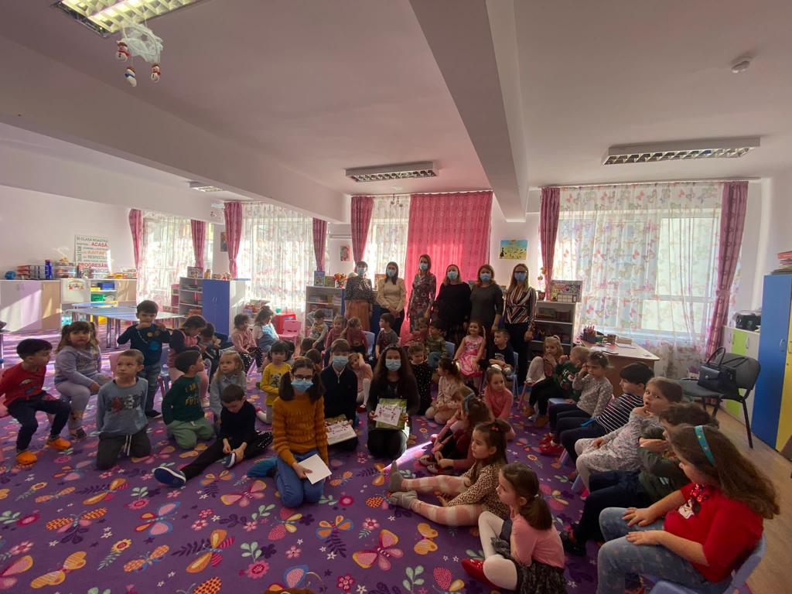
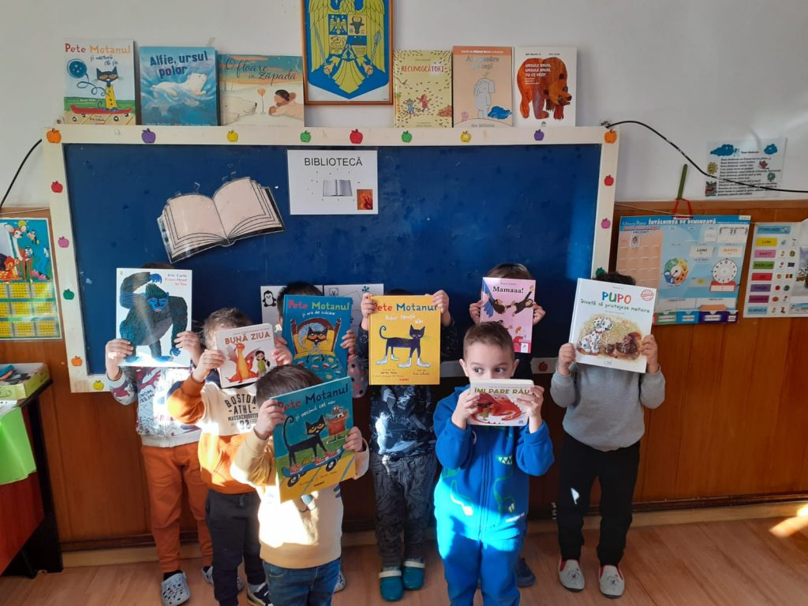

Conform unui raport EUROSTAT, România este ultima în UE la consumul de carte, având numai 2 librării la 100.000 de locuitor. Doar 6.5% dintre români cumpără cel puțin o carte pe an. Vânzarea de carte în librăriile din România a înregistrat o scădere de 85% din cauza pandemiei de COVID. Librăriile fizice sunt peste tot în lume principalul canal de vânzare al cărților, de aceea închiderea acestora a dus la scăderea dramatică a vânzărilor. Cu toate că vânzările online au înregistrat creșteri, ele nu au reușit să compenseze pierderile din vânzările fizice în niciuna dintre țările analizate.
Începând cu 2022, România are o Zi Națională a Lecturii. Cu această ocazie, printr-o decizie a Ministrului Educației, Sorin Mihai Câmpeanu, marți, 15 februarie 2022, în toate școlile, programul a fost modificat astfel încât, indiferent de disciplina prevăzută în orar, la ora 11:00 și la ora 14:00, învățătorul sau profesorul să organizeze, la clasa unde este prezent, activități de lectură la care să participe toți preșcolarii și elevii.
Asociația TOTUL ESTE POSIBIL își continuă demersurile în domeniul educației, prin campania MAI DĂ O PAGINĂ, organizația donând anual în jur de 20.000 de cărți. “Ziua Națională a Lecturii este încă un prilej semnificativ pentru a întări colaborarea cu școlile partenere, legăturile cu elevii și, mai ales, legăturile copiilor cu filele cărților. Deși statisticile oferă date descurajante, continuăm să investim în educație, în special în mediile defavorizate. Lectura va continua să reprezinte un mijloc de acces la o viață mai bună”, a precizat Eliza Nițescu, membru fondator al asociației.
Aproximativ 50 de grădinițe, școli și centre pentru copii au răspuns inițiativei TOTUL ESTE POSIBIL și s-au alăturat campaniei de Ziua Națională a Lecturii, numărul de copii beneficiari ai acțiunii ridicându-se la peste 3.000. Campania a constat în primul rând în donarea de cărți, dulciuri și jocuri către unitățile de învățământ participante. Au existat donații de cărți către clase, dar și donații individuale către elevi care au dorit în mod specific un anume titlu. Alte acțiuni întreprinse au fost recomandările de carte, citirea de povești pe format audio, precum și punerea bazelor pentru ateliere și cluburi de lectură. Indiferent că a fost vorba de copii care frecventează cursurile clasice sau copii suferind de boli severe, precum autism sau Sindrom Down, pe tot parcursul lunii februarie, asociația a căutat surse adecvate pentru achiziția de cărți și a donat exemplare adecvate nivelului de pregătire și înțelegere al fiecărui copil. Faptul că acțiunile de lectură au atras și părinții copiilor, care au lecturat online, alături de copii și educatori, a fost un mare plus.
80% din școlile participante în campanie sunt din mediul rural, în cadrul activității fiind donate peste 600 de cărți noi, achiziționat de la distributori de carte și alte 400 de cărți primite din donații ale persoanelor fizice. De asemenea, dulciurile au însoțit donațiile de carte, peste 300 de kilograme de dulciuri donate de Profi România făcând deliciul copiilor. Fundația Autonom s-a alăturat demersurilor prin donația de cărți de povești cu planse de colorat, dar și un joc cu zeci de întrebări, care îi ajută pe copii să se descopere și să își cunoască mai bine colegii de clasă. Principalul susținător al campaniei este compania Thoughtworks, care a sponsorizat acțiunea încă de la finalului trecut. „Salutăm această acțiune și ne bucurăm că putem să facem educația mai accesibilă, în special copiilor din medii vulnerabile”, au precizat reprezentanții Thoughtworks.
Obiectivul campaniilor TOTUL ESTE POSIBIL de susținere a lecturii este acela de a transforma cititul în obicei. Lectura are rolul și meritul de a ridica nivelul de educație și cultură, de a spori creativitatea, de a stârni curiozitatea și de a pune bazele unei vieți mai bune. Toate inițiativele organizației de încurajare a lecturii se derulează sub denumirea generică MAI DĂ O PAGINĂ! Asociația donează lunar aprox. 5 tone de produse colectate de la companii și persoane fizice, însă indiferent de numărul, componența și dimensiunea coletelor, din niciunul nu lipsește minim o carte. În intervalul 2019 -2021, TOTUL ESTE POSIBIL a publicat în regie proprie 10 cărți pentru persoane de toate vârstele și a donat peste 50.000 de cărți noi sau colectate de la donatori persoane fizice sau companii.
CONTRIBUIE LA CAMPANIA DEDICATĂ LECTURII: